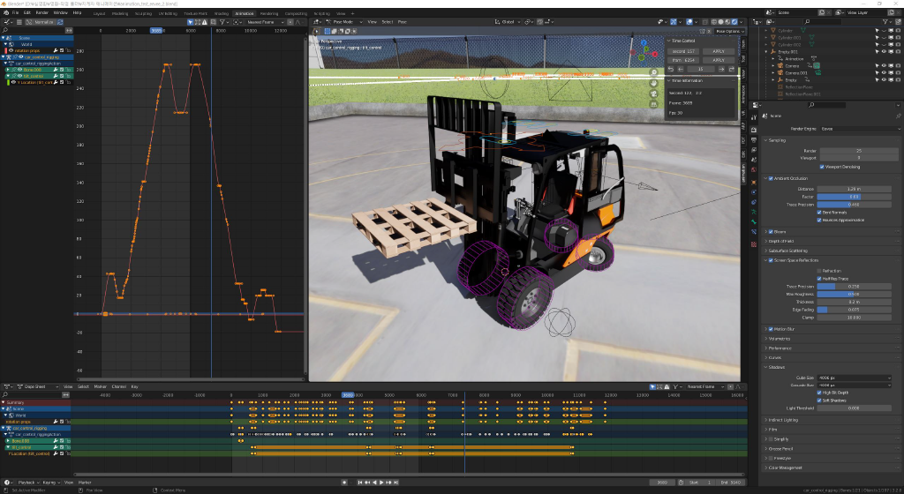
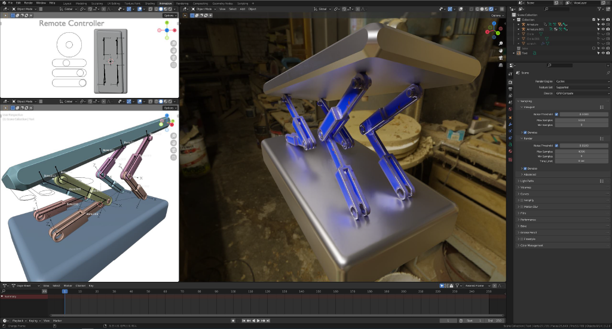
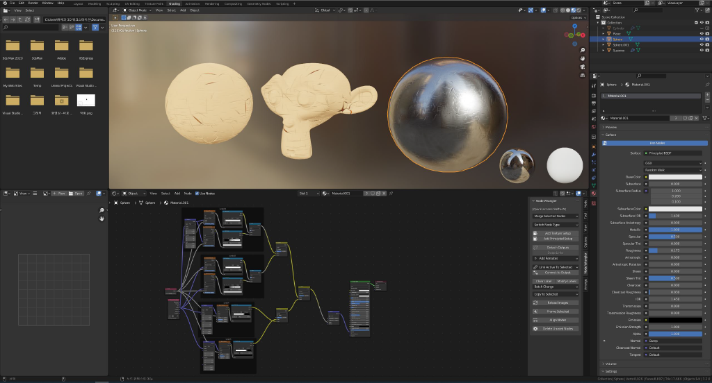
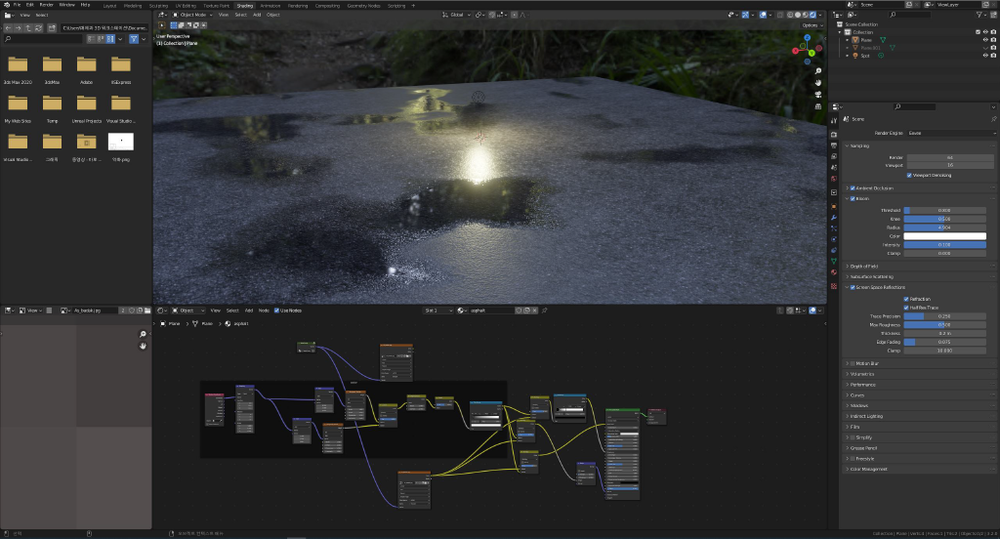
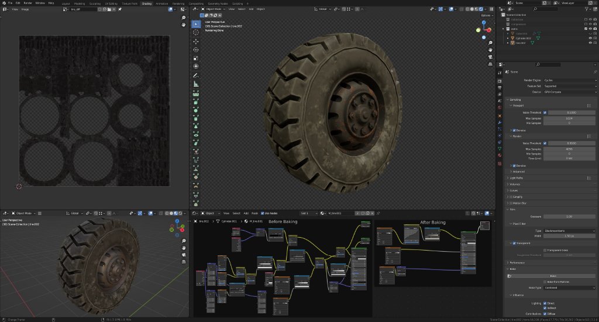
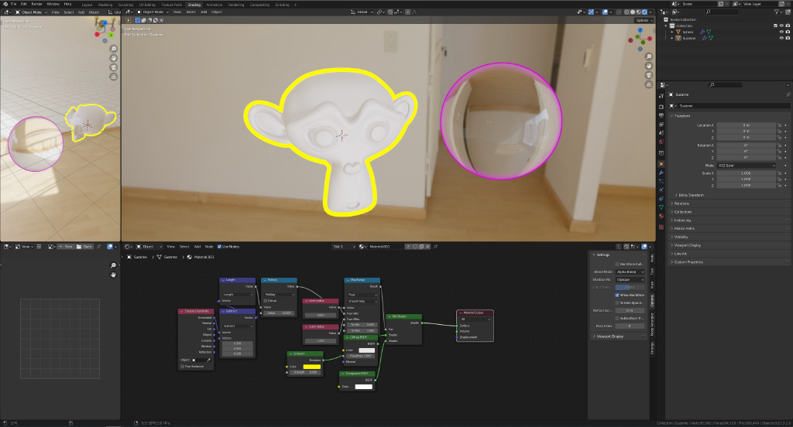

Rigging & material studies
기계 구조의 움직임을 만드는 IK·Driver와 프로시저럴 재질의 베이킹을 실습한 작업 모음.

01 / Mechanical motion
기계의 움직임을 연결하기
지게차는 Bone과 Driver로 리깅하고 애니메이션을 제작했습니다. 카고로더는 Inverse Kinematics와 Driver를 활용해 장비의 움직임을 구현했습니다.

02 / Procedural materials
표면을 만들고 텍스처로 옮기기
프로시저럴 셰이딩으로 스크래치와 아스팔트 위 빗물을 표현하고, 게임 엔진에서 사용할 수 있도록 텍스처 베이킹을 연습했습니다.



03 / Presentation
움직임을 읽기 쉽게
애니메이션에서 물체의 외곽을 강조하는 표현을 실습했습니다.

CREDITS & SCOPE
기여 범위와 작업 기록
공군 복무 중 진행한 개인 연습 과정입니다. 완성된 교육 콘텐츠 전체가 아닌 리깅·재질 기법의 실습 결과를 소개합니다.
기록 기준: 2026.10 포트폴리오, 21쪽. 이미지는 작업 당시의 원본 PNG를 사용했습니다.